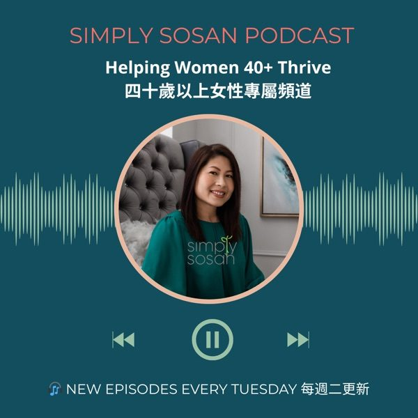

Simply Sosan Podcast · 投資健康Simply Sosan Podcast · 投資健康
Health after 40, in 10 to 20 minutes.四十歲後的健康，每集十至二十分鐘。
Fatigue, mood swings and rising cholesterol or blood sugar are common after 40, and they're not your fault. Sosan shares simple, science-based steps on menopause, blood sugar, sleep and bone health, in English and Cantonese.
四十歲後，容易疲倦、情緒波動、膽固醇或血糖上升都好常見，但呢啲唔係你嘅錯。Sosan 以簡單又有科學根據的方法，用粵語及英語分享更年期、血糖、睡眠與骨骼健康。

Want to put it into practice?想將所學付諸實行？
The podcast explains the why. The Wellness Club is where you do it, with a monthly plan, a group that keeps you going, and a live Q&A to ask Sosan about your own situation.
播客講解背後的原因，有營同學會就是實踐的地方：每月計劃、陪你堅持的小組，以及可以就自己情況向 Sosan 提問的直播問答。